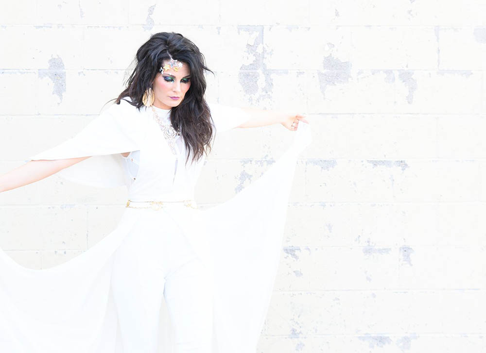

.
Forecast
Weather conditions for city :

Current temperature is: 00°
Weather Conditions: 00
Expected High Temperature: 00°
Expected Low Temperature: 00°
Wind Speed: 00 mph
Get Ready for the best yet …VintageNOW9!
It’s more than a fashion show: It’s a fun evening of fashion and empowerment. The entertainment fundraiser* will be held Sat. Oct. 20th at the Osage Centre. *All net proceeds benefit our local Safe House for Women.
What will a Circus Themed runway look like? Mark your calendar for Oct. 20th at the Osage Centre in Cape Girardeau and we will find out. The 44 vn9 models and 6 alternates have been notified. We will soon be contacting other volunteers such as back stage help, assistants, hostesses, ticket takers, decorations, and other suggested talent for the half time show. So many areas to help as this production grows bigger each year. What a wonderful community we live in that is filled with big hearted supportive people who are determined to make a difference in our fight against domestic violence and abuse awareness.
Ten Day Forecast
| Day 1 | Day 2 | Day 3 | Day 4 | Day 5 | Day 6 | Day 7 | Day 8 | Day 9 | Day 10 |
|---|---|---|---|---|---|---|---|---|---|
| 89°F | 87°F | 78°F | 75°F | 72°F | 72°F | 79°F | 83°F | 85°F | 89°F |
.
Hot weather has returned to the Ozarks! An upper level storm is slowly crossing the plans. Waves of energy spinning around this feature may produce a few scattered storms tonight mainly south of Springfield. Lows overnight will drop to the low 70’s. Temperatures will warm pretty quickly Tuesday to the upper 80’s. A round of storms by mid-afternoon is possible with the next wave of energy. There may be some severe weather with this round of storms. The main threats will be strong winds and moderate hail. A ridge of high pressure then develops over the Ozarks for the rest of the week. Hot dry weather is thus expected. Lows will run from the low to mid 70’s with highs pushing the mid 90’s. The heat index is forecast to approach or exceed 100 degrees.